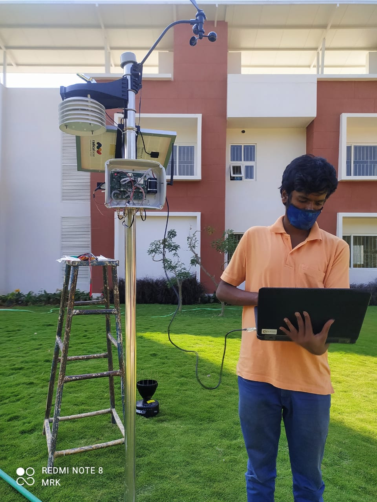
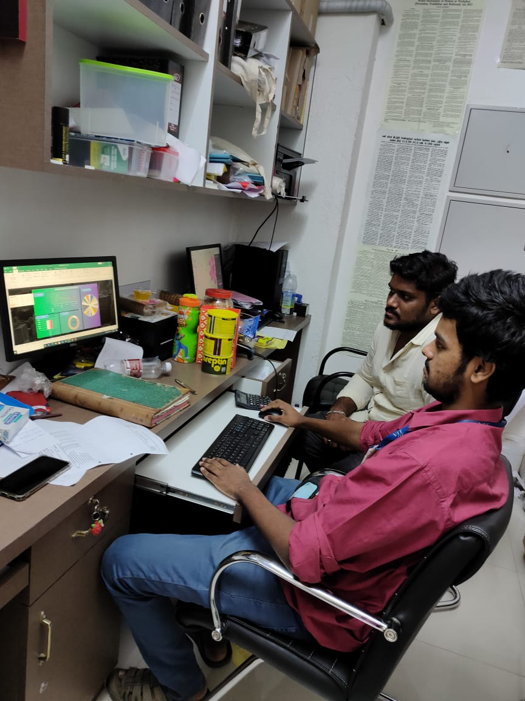

On skill building
and more!
A Brief Note:
Theory learnt in classrooms when applied in practice, can work wonders. I set out to explore real-world applications of skills that I learnt in college. Below, I throw some light about my experiences.
Product Development Intern
Yuktix Technologies, Bangalore, India December 2020
Yuktix is an agri-tech startup, focused on developing next-generation agriculture solutions using Machine Learning, IoT, and Cloud analytics. My role was focused on product diversification. Yuktix operated on cash crops to develop automated weather monitoring systems. I performed market research to gauge the opportunity, and concluded that the coffee sector was a potential market for Yuktix. Further, I researched into key issues that could be solved using Yuktix's products. Disease and pest prevention was the main potential area. To get relevant insights, I collaborated with research scientists from the Coffee Board of India, an independent body that caters to the coffee sector across the country. I eventually prepared a deck to present the solution to present Yuktix's solution to the Coffee Board of India in an attempt to expand Yuktix's presence.
Link to the testimonialOutreach and Expansion Intern
iSchoolConnect Technologies, Chennai, India February-May 2021
iSchoolConnect is an ed-tech startup that simplifies the higher studies application process for applicants, through their cutting-edge software advisory services. My role entailed expansion activities through collaborations with schools, and colleges. I was also provided the role of analyzing their social media, and deploying strategic mechanisms to improve organic engagement. Managing campus ambassadors across colleges, incentivizing them to ensure user retention were some of my deliverables. I was also involved in groundwork, and pitched to potential stakeholders throughout the internship. I was also involved in pre and post sales activities and worked to enhance customer success.
Link to the testimonialAnalyst Intern
Heaven Greens Supermarket, Chennai, India April 2021
Heaven Greens is a supermarket situated close to my house in Chennai, with me being a regular patron to their place. The store maintains an excel sheet to record all transactions in multiple branches across the city. In a casual conversation with the manager, he presented the excel sheet to me. I further analyzed the data to produce actionable insights. My results enabled the manager to make data-driven decisions with respect to sourcing, delivery, and inventory management. I presented a dashboard to the manager, that gets updated in real-time with appropriate input. I also educated the manager and staff with various mathematical functions and shortcut keys in the Microsoft Excel software.
Link to the testimonialCross-functional team intern
Umeed-a drop of hope, (an NGO), Remote, India September-October 2021
Umeed is an NGO that works remotely to contribute towards environmental causes. I was involved in fundraising activities, and worked in marketing, finance, and recruiting roles. I was also engaged in weekly activites to support the larger cause, by planting trees, spreading awareness against smoking, etc. Through this stint, I gained first hand experience about key managerial roles in an organization.
Link to the testimonialSkills and Languages:
- Development: C, C++, Python, HTML, CSS, JS, MATLAB, Microsoft Office
- Analytics: Microsoft Excel, R, KNIME, Rapidminer, Power BI, Node-RED, IBM SPSS
- Marketing: Customer Interaction, Market Reseach, Negotiation
- Soft Skills: Team Building, Aptitude, Presentation, Communication, Empathy
- Languages: English, Hindi, Kannada, Tamil
What keeps me going:
There is no substitute to hard work.
~Thomas A. Edison